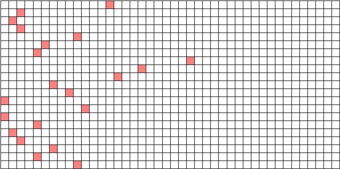

|
There is a notebook with some loose pages at the front. The waiter observes, "I overheard him telling his friend about this. He'd borrowed these from his friend at the theatre; I think he meant to return it to her on Thursday." You look at the loose sheets of paper. Presumably it's up to you to arrange them aesthetically.
Act I Presets:
Act III will be the hardest. Tea service for 14, coconuts, newspapers, all easy enough. But the concertina? All the other rustic props? And am I really supposed to find a dead deer? At least we have a revolving stage so we can easily redecorate the Act I set for Act IV.
Army-issue aluminum trays (canned beef for food?)
Memoirs notebook for EMJ; new book at end (wrapped; D's prop)
Bourbon and gun for sergeant
Check with D., find out what kind of yogurt he prefers
Preset the dead-pig leg-spreader near the register
Make sure B. practices getting hit before getting into makeup
First off, all I have to say is wow - easy design job. He's certainly specific about set and character descriptions.
Will it be easier to have three bottles of the bourbon, or should one of them just be refilled in between acts?
Picking up a wedding dress secondhand somewhere should be fine -- since it has to be dragged on the floor I don't want to risk messing up a rental.
First pass of script: mostly pantomime, few props, easy things. Clipboard and blanket, shopping bag, tape recorder, bottle of pills, riding crop. The stupid heads will be the hard part.
Holly is easy; check with director about authenticity of mirror, goblets, candlesticks, etc.
Must ask friend in SCA if we can get knives--probably need six thanks to E's line, one for each family member and one for P.
Make by Wednesday:
Must find artist and get D. to pose for bust soon.
Will find classicist to check authenticity. (Must remind director that "authenticity" does not extend to actual sweat.)
Need to ask producer for larger props budget. Did not anticipate how many would need replacement--chinese paper lanterns, the radio S. throws, a new breakaway glass bottle each night for B. to smash. Even the poker cards need replacing, they way they get handled.
Need:
Note to cast:
Note to self: remember to keep composition books separate. One wrapped in H's jacket, a stack of blanks sitting next to R in the second act, two different written-in books for R in second act (all prose), one for C (mostly symbols) with replacements if it gets damaged from being torn/tossed.
Precepts:
Preset for office:
Reminders for the cast:
Since the props are easy--alcohol and more alcohol, plus a Leica and tripod for P--I promised the director I'd go out with a camera to get slides of road signs to project on the background. (Check to see if road signs are different in the South?)
Still do to:
Still to do:
This show is prop hell. Six damned plates--and the whole scene shop still smells like fish from when I was in there glueing them on--all of the glasses, bottles, boxes, bags, and every single thing has to be well-organized because the audience gets to see the whole thing. I should make T and P do it; they're the "stage managers" after all.
Tonight: paint "Eugene McCarthy for President" banner, "Chicago Women's Art Coalition" picket sign
Tomorrow: go to baby store, buy robe/gown/slippers, leopard snuggly, stuffed heffalump
Tomorrow night: get on web, check dates of toys for children's ward scene--nothing after 1987
As a shout-out to all homies on Setec who wrote this puzzle, place your answers in normal alphabetical order without leading articles, spaces, or punctuation. Word to your mothers. Yo.
